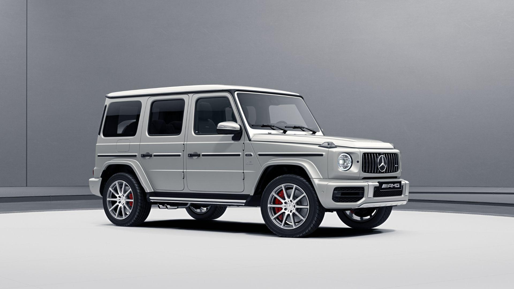

В этой статье пойдет речь о самой старой и самой известной автомобильной компании современности. 26 сентября 1902 года компания Daimler Motoren Gesellschaft зарегистрировала название Mercedes в качестве торговой марки. И именно с этого момента начинается ее история. Первая модель основателя марки, Карла Бенца, была представлена впервые на Парижском автосалоне в 1887 году. Поначалу люди скептически относились к весьма необычному изобретению, и даже побаивались, хотя на тот период времени были введены ограничения для автомобилей, в том числе и скоростные. В черте города скорость не должна была превышать 6 км/ч, а за городом не более 12 км/ч. Известно, что на Карла даже подали иск за то, что его водители очень быстро ездили, обгоняя полицейских. Но Карл нашел выход из этой ситуации – он просто приглашал сотрудников министерства на автомобильные прогулки. В результате ему было разрешено ездить быстрее карет с лошадьми .Но настал переломный момент и скептицизм людей заметно поугас. Случилось это в 1888 году, когда жена отца-основателя, Карла Бенца, отправилась в гости к своим родителям в город Пфорцхайм. Расстояние, немного немало, в 106 км автомобиль преодолел с легкостью и без проблем. Именно тогда-то вся Германия и узнала об этом автомобиле, как о самом удобном средстве передвижения.
Один из самых интереснейших фактов касается логотипа марки. Изначально компания работала не только на автотранспортную отрасль, также была задействована морская и воздушная. Производились авиационные и судовые двигатели. Так как работы в трех промышленностях были успешными, было принято решение увековечить это в своем логотипе. Трехлучевая звезда символизирует успех и преуспевание на суше, в воздухе и на море. Но также существует еще одна версия о внешнем виде логотипа. Она гласит о том, что автомобили марки Mercedes сделаны для удобства пассажира, водителя и механика. Широко известный факт, что название Mercedes пошло от женского имени. Собственно говоря, принять решение о названии было не очень просто. Однажды австро-венгерский посол Эмиль Еллинек решил вложить средства в предприятие Daimler, так как рассчитывал на успех компании. Но после слияния предприятия Бенца с компанией Daimler, возникла следующая ситуация. Так как Daimler уже была зарегистрированным торговым знаком, то было принято решение о названии Mercedes—Benz. В честь дочери австро-венгерского посла. Вообще-то девочку звали Адриана Мануэла Рамона Еллинек, но в семье ее все звали Мерседес, что с испанского переводится как «милосердие»w
